Chapter 4: Deployment of SLAM¶
4.1 Objectives¶
In this chapter, we will run SLAM algorithms on pre-recorded data. By the end, you should have a better understanding of:
- What real-time sensor data looks like when it is fed into a SLAM system.
- Run few open-source SLAM algorithms.
- Identify common parameters to tune when running SLAM.
- Interpret and evaluate SLAM results.
4.2 Deploying a camera-IMU SLAM¶
In previous chapters, we discussed camera sensors suitable for SLAM. We also explored different modalities and configurations of cameras. When it comes to visual SLAM, one of the most widely used sensor configurations is combination of a stereo-camera and IMU sensor. Of course, there are many other possible additions to this setup, such as adding wheel odometry, GPS, LiDAR, or more number of cameras. However, the most repeatedly supported sensor configuration is still stereo+IMU setup. That is why many commercially ready-to-use sensor rigs follow this configuration.
In this chapter, we assume that we have acquired a stere+IMU sensor setup ideal for our application based on the instructions of chapter 2. Also, we suppose calibration of our sensors is done according to the instructions in chapter 3. Now, we want to use this information to run a SLAM on our robot. If you don’t have a robot yet, no worries. We have prepared data recorded on our own robots in the SMARTNav dataset. The data is recorded in the ROS2 bag format, which means playing the bag file simulates a real-time stream of sensor data, just as we would get from a live robot.
4.2.1 VINS-Fusion algorithm¶
VINS-Fusion is widely used in research and sometimes adopted in industry because it is relatively mature, open-source, and has good performance in many real-world scenarios. It is designed to work with several sensor setups, but the most common configuration is a stereo camera + IMU. By fusing these two sources of information, VINS-Fusion can produce smoother and more robust trajectories than a camera-only SLAM system, especially during fast motions, rotations, or in low-texture regions.
At a high level, VINS-Fusion has three main components:
-
Visual front-end: The visual front-end detects and tracks feature points in the images (for example, corners or small textured patches). These tracked features are used to reconstruct the relative motion of the camera between frames and to triangulate 3D landmarks in the environment. In the stereo case, depth can be obtained directly from the left–right image pair, which improves the stability of the system and helps with scale estimation.
-
IMU integration and optimization back-end: The IMU measurements are continuously integrated (often called IMU preintegration) to predict how the pose should evolve between image frames. This prediction is then combined with the visual measurements in a nonlinear optimization problem.
- Loop closure and map optimization: Over time, any odometry system will accumulate drift. VINS-Fusion includes a loop closure module that tries to recognize when the robot revisits a previously seen area. When a loop is confirmed, a pose graph optimization step adjusts the whole trajectory to reduce accumulated error.
From a user perspective, we can think of VINS-Fusion as a pipeline with tunable parameters rather than a black box.
In this chapter, we will not go deep into the underlying mathematics, but we will see how these parameters affect the behavior of the system when we run it on real data.
4.2.2 Running a demo¶
To run the VINS-Fusion algorithm, we have tried to simplify the process of prerequisite installation, compilation, and fixing compatibility issues, often encountered when working with open-source software. To avoid these headaches, we provide a dev-container. Please make sure you have Docker and Visual Studio Code installed on your system by checking this guide. We are continuing on an Ubuntu 22.04, but the dev-container is expected to be accessible similarly on any other OS.
First, you should clone the github repository that we prepared for this course. You can use the following command in an Ubuntu/Mac terminal or a Git Bash session in Windows (if you already have it cloned in the previous chapter, you can skip this step):
git clone --recursive https://github.com/SaxionMechatronics/slam-tutorial-practical.git
git submodule update --init --recursive
Next, open VS Code and from Files menu, choose Open Folder and select the slam-tutorial-practical/slam_deployment folder in the repository that you just cloned. Inside the VS Code you can usually see a pop-up at the bottom-right corner, suggesting that the folder has a dev-container and that you can set up the container. Choose the Reopen in Container option.
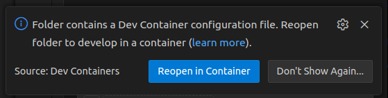
Another way of initializing the dev-container is the Ctrl+Shift+P kreyboard shortcut, and look for Rebuild and reopen in container. The process of building and opening of the container might take a few minutes, depending on your machine. This is due to the compilation of all the prerequisites and the SLAM source codes. If all goes well, we will be notified by this message in the VS Code's terminal: Done. Press any key to close the terminal.
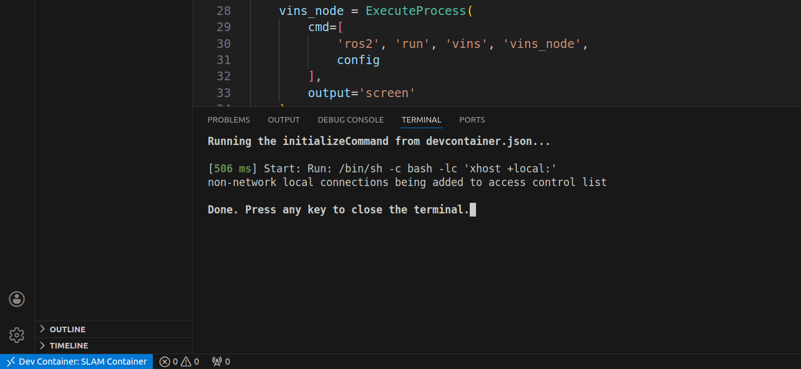
Here, we can open a fresh terminal from the VS Code menu: Terminal -> New Terminal
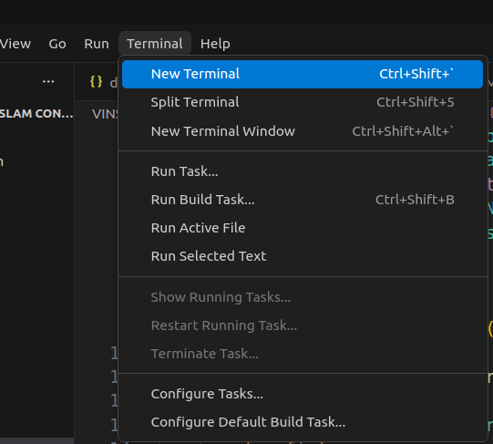
The newly opened terminal is giving us access to the dev-container itself. This dev-container is based on Ubuntu 22.04 and several prerequisites such as ROS2 Humble, Ceres solver (needed by visual SLAM), GTSAM (needed by LiDAR SLAM), and several python packages necessary for this course are installed and accessible in the dev-container, completely isolated from your main OS.
Now, make sure you have one of the pre-recorded data sequences that we have made available on our web-page. For now, download any of them that starts with optitrack in the name, for instance, we use optitrack_handheld_3. These sequences are recorded using a stereo-camera + IMU sensor mounted on a drone (the following picture) that is either flying or being carried by hand in a small room.
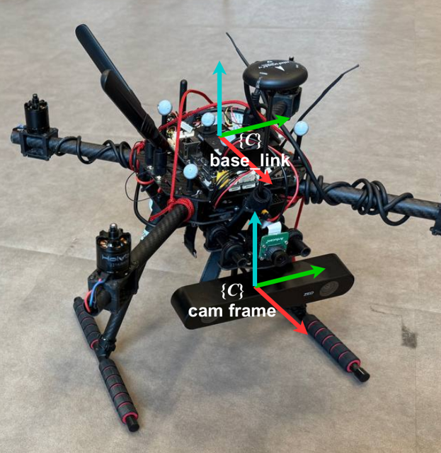
After you download the zipped file of the sequence, create a folder called data inside slam-tutorial-practical/slam_deployment directory. Extract the zipped file (the bag folder) and place it in the slam-tutorial-practical/slam_deployment/data directory. Now, everything is set up for us to run the SLAM. Simply use the following command:
cd ~/ws/src/
ros2 launch vins vins_rviz.launch.py config:=VINS-Fusion-ROS2/config/zed2_gray/main_conf.yaml bag_folder:=data/optitrack_handheld_3/
In the above command, there are two input arguments that you can change. First one is the config argument, which is the path to a configuration file. These configurations contain some descriptions of the sensors, their data, and their calibration info needed by the SLAM algorithm to run properly. Additionally, some other algorithm-related parameters are specified in these files. If you want to run this SLAM for your custom setup, you need to prepare a custom config file. We will talk more about it in the next sections.
The other argument passed to the launch command (bag_folder) is the path to a ROS2 bag folder, which we already downloaded and placed in the workspace. If you wanted to use another sequence, you can change this argument. Note that the sensors used to record target bag file should be the same sensors that are described in the config file. This is why the provided config file config:=VINS-Fusion-ROS2/config/zed2_gray/main_conf.yaml only works for sequences that their name starts with optitrack.
At the end, you should be able to see the RViz visualization tool opened similar to the following video:
Let's briefly discuss what you see in this video. At the bottom of the video, the images from the left and right cameras are displayed. On the images, you can see that some feature points are drawn by red and green points. The algorithm is tracking points in the environment that are easy to recognize between frames. These are usually corners or textured patches on walls and objects. The red points are features that have been tracked over time between consecutive left-camera frames. Tracking them is essential for estimating the camera motion over time. The green ones, are the features that matched between the left and right frames; thus, their distance can be estimated based on triangulation.
After the features are successfully tracked, the algorithm tries estimating and constantly refining their 3D position, which are displayed with white points in the 3D interactive viewport.
The camera's position and orientation is visualized by the moving axes in the viewport. The red axis is the x direction of the camera (front), the green one is the y axis (left), and the blue is the z (up) direction. As the robot is carried in the environment, the history of its positions (the path) is drawn as a green curve.
What you saw in this demo, is basically known as the Visual-Inertial Odometry. The algorithm is fusing the camera image information (through the features it is tracking) with the IMU data and smoothly estimates the motion. If at some point of the estimation, something goes wrong (featureless environment or very noisy IMU), we get few inaccurate motion estimations. That inaccuracy will bias our estimated position hereafter. In other words, the position estimation will deviate from reality, and the odometry method does not have a solution for that. We will later see how loop closure fixes this drift.
4.2.3 Preparing a custom config file using calibration output¶
Each open-source SLAM implementation usually uses a slightly different configuration format. Since we introduced the Kalibr package for calibrating the camera-IMU, we should be careful about how we use the values produced by Kalibr. We chose VINS-Fusion in this chapter, thus, we should convert Kalibr outputs into VINS-Fusion format. It is educational to transfer these values manually, as we do in this chapter, so you get a feeling for how calibration results enter a SLAM system.
Let us continue on the same optitrack_handheld_3 sequence. For VINS-Fusion, each robot setup needs three configuration files:
- Left camera or
cam0intrinsic calibration info - Right camera or
cam1intrinsic calibration info - Main config file containing camera-IMU extrinsic info, and the algorithm-specific parameters
For preparing these files, the easiest way is to use a previously created config file, and only change the entries according to your setup. In the dev-container that we shared with you, there is a config folder for one of our cameras called zed2_gray. You can create a similar folder and rename it. Then modify inside files as we describe below.
Let's start with the left camera instrinsics file named left.yaml. This file has the following format:
%YAML:1.0
---
model_type: PINHOLE
camera_name: camera
image_width: ...
image_height: ...
distortion_parameters:
d1: ...
d2: ...
p1: ...
p2: ...
projection_parameters:
fx: ...
fy: ...
cx: ...
cy: ...
As can be seen, there are some parameters in the file that need to be filled in according to the sensor's calibration. We can find these parameters in the output of Kalibr package (usually a file named *-camchain.yaml). If you need more information on how to acquire this calibration result, refer to chapter 3 on sensor calibration. For stereo cameras calibrated assuming pinhole camera model and radial-tangential distortion model, the file has the following format. We should extract the information needed for left.yaml file in the cam0 section. Pay attention that in our custom config file we needed fx, fy, d1, etc. The position of this values in Kalibr output file is symbolically shown here:
cam0:
distortion_coeffs: [d1, d2, p1, p2]
intrinsics: [fx, fy, cx, cy]
resolution: [image_width, image_height]
... some other parameters ...
cam1:
distortion_coeffs: [d1, d2, p1, p2]
intrinsics: [fx, fy, cx, cy]
resolution: [image_width, image_height]
... some other parameters ...
Similarly, you can create/modify a right.yaml and you can fill it up based on the cam1 parameters.
Now, we can create/modify the main config file required by VINS-Fusion, named main_conf.yaml. Inside this file, there are many important parameters to be set.
In the main config file, first, we introduce the individual camera config files we just created:
cam0_calib: "left.yaml"
cam1_calib: "right.yaml"
Next, we should enter the resolution for the image topics given above. An important note is that the camera resolution when you performed the sensor calibration should be the same resolution for images that you want to use during SLAM run-time. Whenever you want to change the input reslution to the SLAM, repeat the calibration with the new resolution.
image_width: 672
image_height: 376
Afterwards, there is an extrinsics matrix between camera and IMU required with the following format:
body_T_cam0: !!opencv-matrix
rows: 4
cols: 4
dt: d
data: [r1, r2, r3, t1,
r4, r5, r6, t2,
r7, r8, r9, t3,
0 , 0 , 0 , 1.0]
The body_T_cam0 is a 4x4 matrix. This matrix contains the rotation and translation between the left camera and the IMU sensor (transforming camera to IMU). You can find these information in the outputs of Kalibr package, in a file usually named like *-camchain-imucam.yaml. This file is in this format:
cam0:
T_cam_imu:
- [r1, r2, r3, t1]
- [r4, r5, r6, t2]
- [r7, r8, r9, t3]
- [0 , 0 , 0 , 1.0]
...
timeshift_cam_imu: td
By convention, transformation matrices in SLAM algorithms are shown in T_<destination frame>_<initial frame>. You can read this phrase as a tranformation from the right entity to the left entity: "The transformation from <initial frame> to <destination frame>". As such, the T_cam_imu is read "transformation from imu coordinate frame to the cam frame". Similarly, the body_T_cam0 is read as "transoformation from cam0 to body". Note that the IMU frame is sometimes referred to the body frame.
If you follow the meaning of these transformations, you will notice that Kalibr measures the transformation from IMU to camera (T_cam_imu) while the VINS-Fusion anticipates the transformation from camera to IMU (body_T_cam0). These two are the inverses of each other. We have provided the following interactive python script where you can input any 4x4 transformation matrix and get its inverse version. Use the scripts directly if the following interactive tool is unavailable. Then, use the inverted values inside the main_conf.yaml file that you are creating.
The described procedure should be repeated for both cameras and you should create two entries in the main_conf.yaml file named body_T_cam0 and body_T_cam1.
After that, import the estimated time offset between the camera and IMU, measured during calibration. This time offset is very important, since it shows the delay in which the camera senses the motion compared to when the IMU does. In Kalibr output file (*-camchain-imucam.yaml), the parameter is named timeshift_cam_imu. Take the value and put it in our VINS config file:
td: 0.008
The last sensor-specific parameter to introduce to almost all SLAM algorithms, is the IMU noise characteristics. As discussed in chapter 2, all IMUs have imperfections in their data. The angular velocity and linear acceleration that they measure is either biased compared to the real value or has a random noise on it. The SLAM method should have some prior knowledge about the typical bias and noise levels. Since, it allows the SLAM to know how much can it rely on the IMU during the fusion. You can obtain or adjust these values in two ways:
- First, you can do IMU calibration. In this course, we did not cover this calibration in chapter 3; however, if you want to know the exact noise characteristics of your IMU, tools like Allan Variance calibrators might help. This step is mostly advisable if you have a high-grade IMU sensor that you know is relatively reliable.
- Second, for most of the IMU sensors usually used in SLAM systems, using the default values below, yields a reasonable trade-off, so you do not need to worry about doing IMU calibration at this stage.
acc_n: 0.1
gyr_n: 0.01
acc_w: 0.001
gyr_w: 0.0001
g_norm: 9.805
So far, we have introduced all the parameters specific to our sensor setup that we acquired from calibration. However, the VINS-Fusion is a capable SLAM that can also estimate/enhance the sensor extrinsics and time offsets in real-time. Unless you are very confident about your calibration, it is a good idea to allow the VINS to use your calibration info as an initial estimate and improve it on-the-go. For that, enable these two configs:
# Set the values to 0 for disabling and to 1 for enabling
estimate_extrinsic: 1
estimate_td: 1
Lastly, we should make sure our sensor data stream (or data from replaying a bag file) is correctly introduced to the algorithm, so that when we run the SLAM, it starts estimating the state using the sensor data. For that, make sure these parameters are correct:
imu_topic: "some imu topic name"
image0_topic: "left camera topic name"
image1_topic: "right camera topic name"
4.2.4 VINS-Fusion algorithm parameters¶
Other than the sensor-specific parameters, there are other parameters that affect the underlying algorithm. Although these are specific to VINS-Fusion, knowing them is useful since many other open-source SLAMs share similar concepts/parameters. You rarely need to touch all of these parameters at once. In practice, you usually start with the defaults and only adjust a few of them.
The VINS-Fusion supports 3 different sensor configurations:
- Stereo camera
- Monocular camera + IMU
- Stereo camera + IMU
It can be controlled via the following parameters:
#support: 1 imu 1 cam; 1 imu 2 cam: 2 cam;
imu: 1
num_of_cam: 2
The next group of parameters control the visual front-end, i.e. how features are detected and tracked in the camera images. max_cnt limits how many feature points are tracked at the same time. A larger value gives more cues about the motion but costs more computation. Something around 100–200 is often a good trade-off. min_dist sets the minimum distance in pixels between any pair of features in the image. If it is too small, features cluster in one area and become less informative. If it is too large, you may lose detail in textured regions. Depending on the resolution of the images fed to VINS-Fusion, you might need to min_dist, looking for feature distribution similar to the right image in the following figure.
max_cnt: 150
min_dist: 15
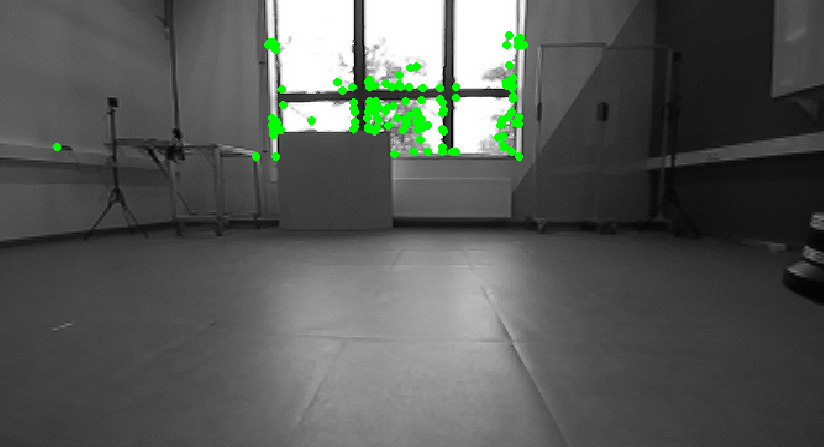
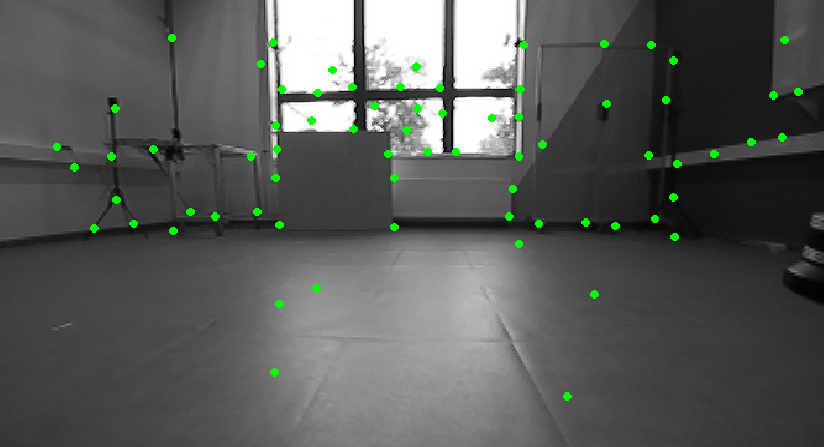
min_dist parameter. On the left, with min_dist=2, all the features are picked from a small region of the image. On the right, min_dist=20, ensures a better distribution of feature points.
The parameter freq specifies how often the tracker publishes its results. If you set it to a positive value, for example 10 Hz, it will down-sample the tracking output to that frequency to save computation. F_threshold is the RANSAC threshold (in pixels), a filter to only let high quality features to be used. Increasing it makes the tracker more tolerant to outliers but slightly less precise.
freq: 10
F_threshold: 1.0
If show_track is enabled, VINS-Fusion publishes a debug image with the tracked features overlaid, which is very useful to visually inspect if tracking is working. This image is the same that you observed when you ran the initial demo. If flow_back is enabled, the feature tracking runs twice. Once the features are tracked forward from last image to the current one, and then, they are tracked backwards from current image to the last one, to see if they end-up in their initial position. This helps rejecting badly tracked points at the cost of a bit more computation.
show_track: 1
flow_back: 1
The next group of parameters limits how much work the non-linear optimizer (the back-end of VINS-Fusion) is allowed to do for each update. max_solver_time sets the maximum time budget of the solver per optimization step. If this value is too large, the system might no longer run in real time. If it is too small, the solver may stop before fully converging, which reduces accuracy. max_num_iterations limits the number of iterations the optimizer is allowed to run inside this time budget. Again, higher values improve accuracy but cost more CPU.
max_solver_time: 0.04
max_num_iterations: 8
The parameter keyframe_parallax controls how often new keyframes are created. Keyframes are those instances of time where the camera has sufficiently moved or rotated that it sees a new scene. Moreover, parallax simply refers to the motion of feaures in the scene. keyframe_parallax is expressed in pixels, when the average parallax of feature points between the current frame and the last keyframe is larger than this threshold, VINS-Fusion promotes the frame to a new keyframe. A lower keyframe_parallax means more keyframes, a denser optimization problem and potentially higher accuracy, but also higher computational cost. A higher value means fewer keyframes and lighter computation, at the cost of some detail.
keyframe_parallax: 10.0
4.2.5 Loop closure¶
So far, we have run a demo of VINS-Fusion method in Odometry mode and we have learned how to customize it for a new camera. As discussed, when you only run visual-inertial odometry over long trajectories, you will inevitably deal with the drift problem. That is why visual-inertial odometry, alone, cannot be a very reliable source of navigation for your robot, and you will require some other accurate sensor that once in a while, corrects the drifts of odometry. Examples of such sensors can be GPS for outdoor robots, or wireless beacons for indoor robots.
The purely vision-based solution to this is the Loop Closure. It is only applicable if you have a robot that may revisit the same location multiple times. Loop closure is basically the ability to identify a previously seen area and based on that, correct the odometry estimation (to zero the accumulated error and drift). To put this into perspective, let's redo our demo, this time not only running the odometry, but also the loop closure. To this end, you can use the following launch command inside the dev-container:
cd ~/ws/src
ros2 launch vins vins_lc_rviz.launch.py config:=VINS-Fusion-ROS2/config/zed2_gray/main_conf.yaml bag_folder:=data/optitrack_handheld_3/
You should be able to see the RViz opened and the result should look something like the following video:
The difference is that now, there are two axes displayed in 3D viewport. One is thinner and that is the same odometry estimated position and another is a thicker one which is the corrected position of the odometry by loop closure. There is also a new path visualized (in blue), which is the corrected path after each loop detection. As you can see, at the beginning, the two position estimations match each other almost perfectly, but as time passes, the green trajectory is drifting from the rectangular path that camera is going on, while the blue curve, corrects itself regularly and remains closer to the rectangular path that it is supposed to be.
Although the above observation intuitively shows how the loop closure improves the quality of your localization, it is not a definitive and numeric measure of accuracy. We can go over such analysis in the next sections when we discuss evaluation methods for SLAM.
4.3 Deploying a LiDAR-IMU SLAM¶
4.3.1 FASTLIO Algorithm¶
FASTLIO is a LiDAR + IMU odometry method. In other words, it takes 3D scans from a LiDAR and inertial measurements from an IMU and smoothly estimates position and orientation of the robot (its 6-DoF pose). You can see it as the LiDAR-based equivalent of VINS-Fusion. Instead of working with images and IMU, it works with point clouds and IMU.
-
Preprocessing & feature selection: Each time the LiDAR produces a scan, FASTLIO first cleans it a bit (removes motion distortions) and picks useful points from it. You can think of these features as points that lie on clear edges or flat surfaces, which are easier to match later.
-
Motion prediction from IMU: While the LiDAR is scanning, the IMU is measuring how the sensor is moving (accelerations and rotations). FASTLIO uses this IMU data to predict how the sensor moved since the last scan. This prediction does not need to be perfect, but it gives a good starting guess for the next step.
-
Scan-to-map matching: FASTLIO keeps a local map of the environment built from recent LiDAR scans. For every new scan, it tries to align the selected points to this map. If the predicted motion from the IMU was slightly off, the algorithm adjusts the pose so the new points line up well with surfaces already in the map. By always matching to the local map (not only to the previous scan), the system becomes more stable and less sensitive to noisy measurements.
-
Updated pose and local map: After aligning the scan, FASTLIO outputs an updated pose (position and orientation) and updates the local map with the new scan information. This pose can then be used for navigation, mapping, or as input to a higher-level SLAM or loop-closure module.
From a practical point of view, you can think of FASTLIO as a real-time LiDAR odometry block that you plug into your robot to get a continuous 6-DoF estimation and a local 3D map. To use it effectively, you mainly need correct LiDAR-IMU calibration and reasonable mapping parameters, rather than a deep understanding of the underlying mathematics.
4.3.2 Running a demo¶
To run a LiDAR-based demo, we use the same dev-container we prepared and explained in the previous section. Follow these steps to run a demo:
- Open the container in VS Code
- Download a bag file from the SMARTNav dataset page that contains LiDAR point cloud data. Here we will use the
corridor_ground_1sequence. Put the bag file in the workspace folder (slam-tutorial-practical/slam_deployment/data). This bag file is recorded using a ground robot equipped with LiDAR and camera sensor in addition to some on-board computing power:
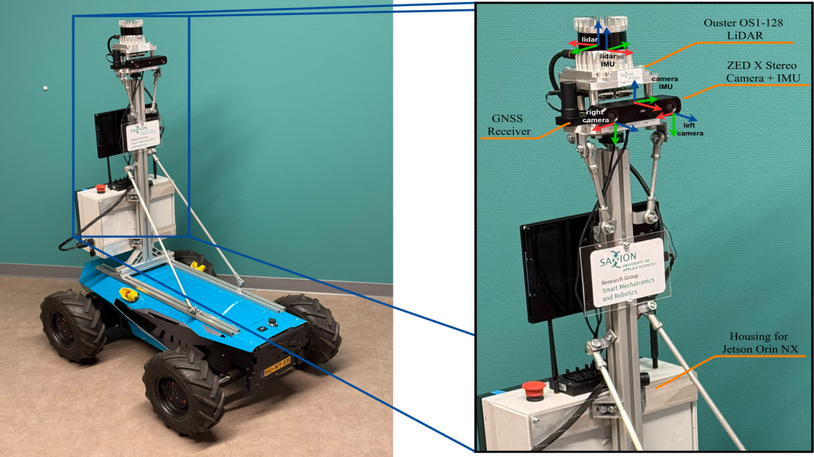
- Use the following launch command in a terminal inside the dev-container:
cd ~/ws/src
ros2 launch fast_lio mapping_bag.launch.py config_file:=ouster128.yaml bag_folder:=data/corridor_ground_1/
If everything goes well, you should see a visualization like the following video:
In the above video, on the bottom-left corner, you can see the image from the forward-looking camera. This image is not being used by FASTLIO at all. It is displayed to give you an idea about the environment that the robot is exploring, and to intuitively verify the map being generated.
In the 3D viewport, the robot's pose is visible by a moving axes. The path that the robot has taken is visualized by a green curve. Unlike, the visual SLAM that we discussed earlier, the map created by our LiDAR-based algorithm is a bit more dense. In VINS-Fusion, only a map of the features was produced, which was limited to the corners and edges. However, here you can see that all surfaces (excluding glass) are uniformly captured.
You can see a map of the places the robot has visited is being generated and updated as the robot explores more area. The color of the points in this map is determined by the intensity attribute, which measures how strong the LiDAR reflection was from that surface. Intensity mainly depends on the material, angle of incidence, and distance.
One of the main qualitative measures of how a SLAM algorithm is doing, is by looking at the correspondence of the map segments at locations that the robot revisits. In this demo, the robot traverses a corridor area and comes back at its starting position. Surprisingly, the map does not experience a noticeable deviation. The wall surfaces of the new scans almost match the map that was created before. This is an indication of accuracy and proves that FASTLIO, despite being only an odometry algorithm (not having loop closure mechanism), is pretty competitive.
The discussed map can be even more dense. We intentionally lowered the density of the published map to keep the UI more responsive. We will explore the parameters of FASTLIO in the next section. However, the true local map that is being maintained in the computer's memory, looks more like the right image in the figure below. This high density is possible thanks to the dense LiDAR sensor Ouster OS1-128, used in this experiment. It is worth noting that this sensitivity to high density map creation is not mainly caused by the FASTLIO, and is more related to the visualization software (RViz) limitation:
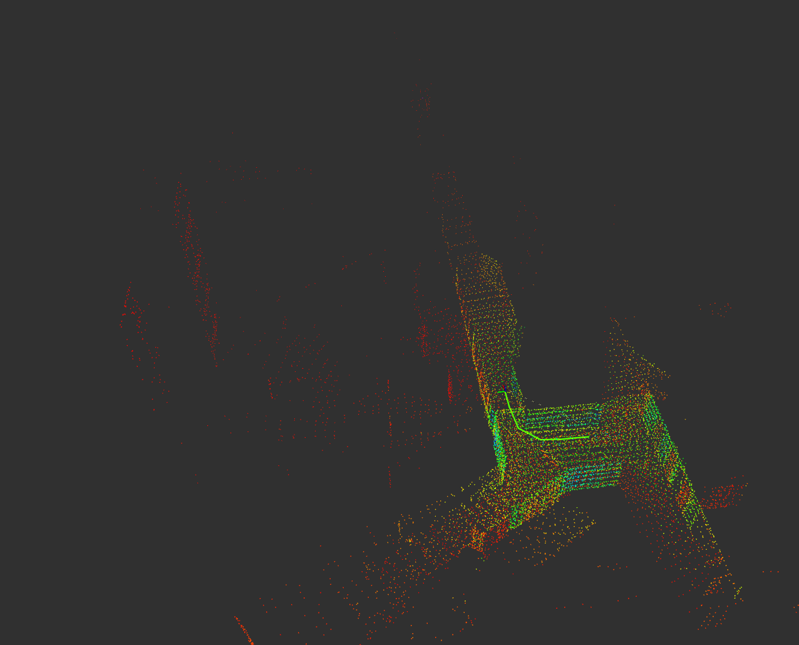
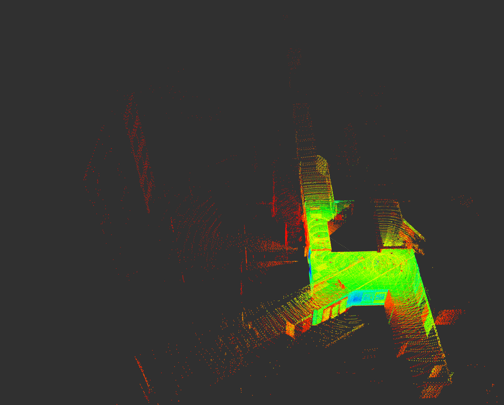
4.3.3 Configuring FASTLIO¶
In the previous experiment, we used a predefined configuration file(ouster128.yaml). For a different experiment, you might need to create your own copy of the config file and adjust the specific parameters. These files are stored in the FAST_LIO_ROS2/config.
First, let's look at the parameters that determine the inputs/outputs. You should enter the topic name for the LiDAR point cloud (lid_topic) and the topic name for the IMU sensor (imu_topic).
lid_topic: "/ouster/points"
imu_topic: "/ouster/imu"
Few parameters determine what the algorithm publishes. scan_publish_en determines if any output point cloud (the entire map, the de-skewed LiDAR scan, and etc.) should be published or not. Disabling the point clouds helps with computation efficiency and it is better to be disabled if you only need localization. With map_en, you can disable publishing of largest pointcloud (the entire map of the environment) but position estimation is still running. If you need a map, still you can control whether you need a dense map or a sparse one through dense_publish_en parameter. Lastly, if you want to visualize the history of locations that the robot has visited you can use path_en. Most of these topics are good for analysis or debugging.
path_en: true
map_en: true
scan_publish_en: true
dense_publish_en: false
Then, we should tell more about the sensor configurations. The FASTLIO algorithm uses both the LiDAR and IMU and unlike the VINS-Fusion, can not operate on one of them alone. Each data coming from the LiDAR or IMU sensor is time stamped, indicating the exact moment when the data is associated to. We should specify whether these times are synchronized or not. In this context, synchronization means two things: 1) both sensors share the same time base, and 2) they report measurements for the same physical motion at the same timestamps. When we ensure this time synchronization, then we can compare or properly fuse the motion information reported by these sensors. How to make sure your data is synchronized?
- Hardware synchronization: The most reliable time synchronization is done at hardware level. The process of doing this for multiple sensors (a LiDAR/Camera and an IMU) is out of our context because it requires real hardware to work with.
- Using LiDARs with embedded IMU: If you use sensors that embed an IMU within (as most LiDARs in the market do), then, you can trust this synchronization to your manufacturer.
- Static LiDAR-IMU calibration: Additionally, you can manually calibrate the LiDAR-IMU system using the tools discussed in chapter 3 and tell FASTLIO about the estimated time-offset between LiDAR and IMU through the
time_offset_lidar_to_imuparameter. This estimated offset is static while the time offsets in your system might slightly change due to many factors. - Dynamic LiDAR-IMU calibration: As a last resort, the FASTLIO implementation can estimate/refine the time difference between the LiDAR and IMU during the runtime if you enable
time_sync_en. The benefit of static calibration over dynamic method is that the quality of calibration process is controlled by you (in terms of being in a featureful environment and having necessary motion excitations to gaurantee a good calibration).
time_sync_en: false
time_offset_lidar_to_imu: 0.0
Some other information about the LiDAR is needed for the algorithm to handle the data coming from different sensors with different data formats. The parameter lidar_type supports 5 categories of sensor types. It is mainly intended for pre-processing, and to allow the algorithm to de-skew the pointcloud. Each category is associated with a number. Category 1 is for for Livox LiDARs, 2 for Velodyne, 3 for Ouster, 4 for Livox MID360 LiDAR and any other number for a default type. If your LiDAR is immediately one of these categories, chose the parameter accordingly.
Otherwise, you should check two things about your LiDAR poincloud, so that you can decide which of the above modes best suits your setup. You should see if (1) the pointcloud has multiple rings and if (2) it has a unique timestamp for each point. This information can be obtained from datasheet. You can also verify this by checking the data using this python script. To use the script, make sure your LiDAR's ROS2 driver is running and the pointcloud topic name on top of the script matches the topic published by your LiDAR. As a result, you will be informed about your LiDAR's rings and existence of per-point timestamps.
- Choose 2, if you have a rotating LiDAR with multiple rings but each point of the pointcloud does not have a distinct timestamp. If you choose this LiDAR type, put a correct value of
scan_rateaccording to the publishing rate of your sensor. This can be acquired byros2 topic hz <topic_name>. - Choose 3, if you have rings and distinct time for each point.
- If none of these information is given by sensor, go for default (set
lidar_typeto any other number), which means that the algorithm will not de-skew your pointcloud facing the motion distortions.
The FASTLIO algorithm translates your pointcloud into a number of vertical scanning lines. There is a parameter named scan_line that means the number of vertical lines to form from input pointcloud. This number should match the number of vertical rings that your LiDAR has, in order to fully use all the information that sensor captures. Meanwhile, it can be a way to filter out some parts of the data (to omit the ground or ceiling). In our example bag file, we used Ouster OS1 128 sensor that publishes a pointcloud with 128 vertical channels.
Use the blind parameter to filter out the points that are closer to the sensor than a certain value. It is usefull when you want to ignore parts of your robot that are captured in pointcloud.
lidar_type: 3
scan_line: 64
blind: 0.3
scan_rate: 10.0
point_filter_num which helps neglecting some points and down-samples the incoming pointcloud, reduces CPU load, and enhances processing speed; however, setting it to large values might reduce the accuracy.
A more intelligent filtering is removing points that are not good features by enabling feature_extract_enable. Here, features are determined by checking curvature or smoothness of surface to find edge-like areas. Another form of pre-processing is to geometrically average points that are close to each other. In other words, we divide the space into smaller voxels and average positions of points that fall into each cell. To use such filters, you can use the filter_size_surf and filter_size_map to control how detailed the point extraction process should be. A smaller value means higher number of averaged points will be extracted; it increases the accuracy of the whole process but adds to the computations.
feature_extract_enable: true
point_filter_num: 3
max_iteration: 3
filter_size_surf: 0.5
filter_size_map: 0.5
Next, let us go through the parameters than are important for the back-end of FASTLIO. A common set of parameters used in almost any open-source IMU-aided SLAM, is the IMU noise characteristics. Here, they are named acc_cov, gyr_cov, b_acc_cov, and b_gyr_cov. As mentioned in VINS-Fusion section, these parameters can be acquired by Allan-Variance IMU calibration tools. We omit this process and use some generic parameters that are applicable for most commercial sensors. If you have an accurate IMU sensor, you can provide these parameters gained from your calibration.
acc_cov: 0.1
gyr_cov: 0.1
b_acc_cov: 0.0001
b_gyr_cov: 0.0001
The FASTLIO algorithm keeps a portion of the map being generated (local map) in the memory and constantly compares newly measured point clouds to this local map in order to estimate relative motion. Two variables control the way the local map is being maintained. The variable cube_side_length determines the size of the local map, while the the variable det_range sets how close the robot should get to the local map border to update (move) the local map bounding box. It should be intuitive that for small indoor areas you better have a smaller value, and for outdoor, you should go for larger values.
fov_degree: 360.0
det_range: 10.0
cube_side_length: 50.0
Another important back-end parameter is the extrinsic tranformation between LiDAR and IMU. Unlike the VINS-Fusion method that took both rotation and translation as a single homogeneous matrix (4x4), here in FASTLIO, you need to provide a separate rotation matrix (3x3) and a translation vector (1x3) that tranforms from LiDAR frame to IMU frame. In most of the commercial LiDAR sensors that are shipped with and internal IMU, you can get these values from the vendor. They are usually published as a ROS topic or they are accessible by a tf tree when you run the sensor's ROS driver. If you can't get those values, or if you want to use another external IMU outside of the LiDAR, you can always follow the LiDAR-IMU calibration explained in chapter 3. In the calibration results provided in previous chapter, look for these fields in the Refined results:
Refinement result:
Homogeneous Transformation Matrix from LiDAR to IMU:
r11 r12 r13 t1
r21 r22 r23 t2
r31 r32 r33 t3
1. 0. 0. 1.
You should reformat this information into the following format needed in the FASTLIO config file. You should insert the translation components in extrinsic_T field and the rotation components into the extrinsic_R field. Pay attention to how we symbolically named the components, to understand how the translation and rotation are extracted from the 4x4 matrix. Additionally, you can enable whether these values should be refined during execution or not by adjusting the extrinsic_est_en parameter.
extrinsic_est_en: true
extrinsic_T: [ t1, t2, t3 ]
extrinsic_R: [r11, r12, r13,
r21, r22, r23,
r31, r32, r33 ]
Finally, you can use max_iteration to adjust the amount of optimization steps needed to align a new scan to the local map. A higher value results in better position estimation but adds to the computation cost.
4.3.4 LeGO-LOAM Algorithm¶
FASTLIO algorithm is very capable when it comes to localization in relatively small areas; however, it still exhibits limitations of Odometry algorithms when it comes to larger routes. We have demonstrated this in the following figure, an experiment where the robot starts from a certain position in an outdoor environment, traveled a large path and came back to the same spot. We processed the recorded data (the sidewalk_ground_1 sequence in SMARTNav dataset) using different algorithms and drew the estimated trajectories on a satellite map. You can see the the visual odometry coming from VINS (yellow trajectory) has ended up tens of meters away from where it was supposed to be. FASTLIO (purple), does a better job but still the start and end do not completely match, with few meters error at the end.

To fix the odometry drifts of FASTLIO, an extension to the algorithm is necessary. Loop closure or GPS, can be used in such an extension. Here, we intend to demonstrate this correction behaviour, but, at the time of writing this practical guide, we found no easy-to-run ROS2 implementation of loop closure for FASTLIO. That is why we introduce a different algorithm, namely LeGO-LOAM, that has an odometry + loop closure implemented. The result of using LeGO-LOAM for localization (and mapping) is portrayed in the previous figure (green path). This is the only method that can correct the errors of localization at the end point. Additionally, the path marked on the map makes more sense in relation to where the robot has actually traveled.
LeGO-LOAM is a feature-based LiDAR odometry and mapping algorithm designed for ground robots. It segments out the ground, extracts edge and planar features from the 3D point cloud, and then runs an optimization to estimate the 6-DoF motion between scans. A local map and pose graph are maintained, and loop closure constraints are added. The pose graph is then optimized with iSAM2 to correct drift.
LeGO-LOAM is LiDAR-centric and is often used in practice as a LiDAR-only SLAM. Because it does not tightly fuse IMU like FASTLIO does, LeGO-LOAM can drift more under aggressive motion and suffers from motion distortion. In return, it is conceptually simpler and avoids IMU calibration and time-syncing headaches. So, LeGO-LOAM is attractive for relatively slow ground vehicles, with a clear ground plane. It is a lightweight, feature-based LiDAR-only SLAM with built-in loop closure on modest hardware. It becomes less ideal when the motion is aggressive or the geometry is challenging. In those cases FASTLIO tends to shine, for example on UAVs or handheld sensors with aggressive motion, small FOV or non-repetitive LiDARs.
To run the LeGO-LOAM, simply use the following command and specify a bag folder and a config file:
ros2 launch lego_loam_sr run.launch.py config_file:=LeGO-LOAM-ROS2/LeGO-LOAM/config/loam_config_corridor.yaml bag_folder:=data/corridor_ground_1/
The expected outcome should look like the following video:
In the video, the trajectory of robot is visible in green. The latest pointcloud of the environment is shown in white/gray colors. The map that is being generated of the environment is shown sparsely. Here, you can visually see how the alignment of latest pointcloud with the map is being done iteratively until it fits perfectly. Unlike FASTLIO, we do not have an option to publish more dense maps for LeGO-LOAM.
4.4 SLAM Evaluation¶
So far, we have discussed how to run visual or LiDAR-based SLAM methods. These methods mainly output the local position of your robot and a 3D map resembling the geometry of the environment. But as an engineer who wants to deploy one of these methods, it is always necessary to quantify the performance of these methods, and if not possible, to at least have some valid qualitative assessment. Why is this important from a practical point of view? Because it can help us compare different methods and find the most accurate option for our application. Moreover, we can compare the effect of changing system's parameters and make informed decisions about what configuration works best.
4.4.1 Ground-Truth¶
Evaluation of anything follows the same pattern: prepare some questions, ask them from the evaluatee, collect the answers, and compare them with the correct answers (ground-truth) to those questions. In case of evaluating SLAM, the ground-truth of the output quantities, i.e. position and map, needs to be prepared if we want a valid numerical assessment.
For position, many techniques are used in online datasets, including indoor motion-capture systems, Real-Time Kinematics (RTK) sensors for outdoor clear areas, surveying equipment such as Total Station, etc. In some cases, your best estimate of position by fusing multiple sensors can be used as ground-truth. For instance, we know that LiDAR SLAMs are more accurate than the visual Odometry/SLAM methods. So you can equip your robot during R&D temporarily with a LiDAR sensor and collect both LiDAR and camera data, then use the LiDAR-based SLAM's estimation of positions as a ground-truth for your visual SLAM's position estimation.
For maps, synthetic datasets that can provide accurate geometry of the environment, or industrial laser scanners are used to provide a ground-truth environment map.
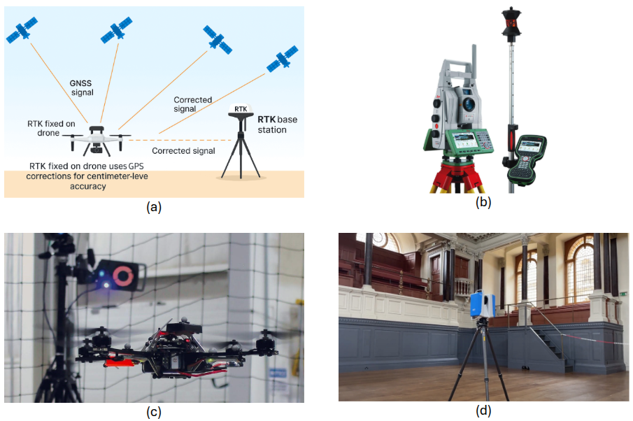
4.4.2 Positioning Evaluation Using EVO Package¶
If you manage to create an experimental setup for your application by providing ground-truth measurements, or you use an online available dataset that does provide ground-truth for each sequence, now you need a tool to help you with analyzing your results.
EVO package provides some standard tools commonly needed for evaluating SLAM methods (or generally any position estimation):
- Automatically associates and aligns trajectories that represent the same motion but might be in different coordinate systems
- Has multiple flexible plotting and visualization formats
- Has a powerful CLI interface which makes it relatively easy to analyze SLAM outputs
All we need to do is to record the outputs of our SLAM in ROS2 bag format and then pass it to the EVO tool. EVO is already installed in the dev-container that we set up and used in previous sections for running the SLAM methods. To exercise evaluation, first you need to run a SLAM in one terminal. For instance, let's run VINS-Fusion on the optitrack_handheld_3 sequence:
ros2 launch vins vins_rviz.launch.py config:=VINS-Fusion-ROS2/config/zed2_gray/main_conf.yaml bag_folder:=data/optitrack_handheld_3/
We should know which ROS2 topic contains the output position estimation of our SLAM. It is usually mentioned in the documentations of the method. We can also inspect available topics to find the data we are looking for. Open a second terminal inside the container by going through Terminal -> New Terminal and then try to find the odometry or pose topic which is actually the output of the SLAM by running:
ros2 topic list
For VINS-Fusion you will see:
/camera_pose
/events/read_split
/extrinsic
/feature_tracker/feature
.
.
.
/odometry
/path
/zed/zed_node/imu/data_raw
/zed/zed_node/left_raw_gray/image_raw_gray
/zed/zed_node/right_raw_gray/image_raw_gray
It should be obvious from the topic names that \odometry is the topic we are looking for (in case of running an odometry-only test without loop closure). If we run VINS-Fusion with loop closure, \odometry_rect is the answer. We can further make sure about the correctness of the topics by checking the message type of this topic through the command:
ros2 topic info /odometry
Which reveals information about the topic including its type. If the type was nav_msgs/Odometry, geometry_msgs/PoseStamped, geometry_msgs/TransformStamped, geometry_msgs/PoseWithCovarianceStamped or geometry_msgs/PointStamped, it verifies that we have the position estimation output of our SLAM.
All we have to do now is to record this topic in a bag file. Use the following command:
ros2 bag record <Odometry or pose topic name> -o <A folder dir for saving the output>
For instance we use the command like this:
ros2 bag record /odometry -o data/vins_odom
Now we should also get the ground-truth for this sequence. The ground-truth for each sequence of the SMARTNav dataset is available on the web page and is in a zip format. Put the data in our dev-container's workspace in slam-tutorial-practical/slam_deployment/data and extract the zipped bag file.
Now, let's use EVO to convert and plot our data. First, navigate to the folder containing the bags and convert the VINS output bag and ground-truth bag into a text file:
cd data
evo_traj bag2 <bag folder dir> <odometry topic> --save_as_tum
mv <odometry topic>.tum <bag folder dir>.tum
In the above command, note that the <bag folder dir> should be set to the ROS2 bag directory in which the metadata.yaml file exists, otherwise you will receive errors. The <odometry topic>, determines the topic name containing the actual odometry message as we figured it out in previous steps. If you are not sure about the topic name, you can always inspect the metadata.yaml file of your bag where the topic names and their types are reported. The evo_traj command, dumps a text file with .tum extension that is named similar to the topic name, in the same directory that you are. We rename it to the bag file or any other name that is more informative about the experiment.
In our example, we used the following commands to extract trajectory info from 1) VINS output bag and 2) ground-truth bag we just downloaded:
# For VINS output
evo_traj bag2 vins_odom/ /odometry --save_as_tum
mv odometry.tum vins_odom.tum
# For the downloaded ground-truth
evo_traj bag2 optitrack_handheld_3_gt/optitrack_handheld_3_gt/ /Robot_1/Odom --save_as_tum
mv Robot_1_Odom.tum optitrack_handheld_3_gt.tum
You should now see vins_odom.tum and optitrack_handheld_3_gt.tum in the data folder. Now, let's plot the two trajectories to visually compare the performance of the algorithm with the correct path.
evo_config set plot_backend Agg
evo_traj tum <vins output .tum file> --ref <ground truth .tum file> -va --align --t_max_diff 0.1 -p --plot_mode xy --save_plot <a .png file name for the plots>
In above command, first we disable plotting backend from popping up windows and just saving everything in form of .png images. Then, we use the evo_traj command to plot the trajectories. It should be clear that we can feed in as many .tum files in this process. We must feed one .tum file as the reference (the one coming from ground-truth). We use the option --align because we know the trajectories might be expressed in different coordinate systems; thus, aligning will automatically bring them into one comparable coordinate system. The parameter --plot_mode deremines the 2D plane in which we look at the data. You can also set it to xyz to view data in 3D plot. And lastly, --save_plot determines a name for the output image files. In our example, we use evo_traj like this:
evo_traj tum vins_odom.tum --ref optitrack_handheld_3_gt.tum -va --align --t_max_diff 0.1 -p --plot_mode xyz --save_plot vins_gt_comparison.png
Let us stress the importance of correct alignment. If you do not align your two trajectories (or not correctly aligning them), these two trajectories are expressed in two completely different coordinate systems. Each of them might be correct in its own coordinates but they will not be comparable with each other. Assume that you have a robot that is moving in east direction. Thus the GPS sensor of the robot reports movement in positive \(y\) direction according to the global coordinate system that is defined for GPS data. Also, you have started your SLAM algorithm at the beginning and the SLAM will report moving in positive \(x\) direction (most SLAMs report position in a coordinate system that is defined at their beginning position and orientation). Both these measurements are correct in their coordinate system but we can not yet compare them with each other. That is why, we need to first align them. EVO did this automatically when we passed the --align argument. If we don't do this, the trajectory plot will look like this:
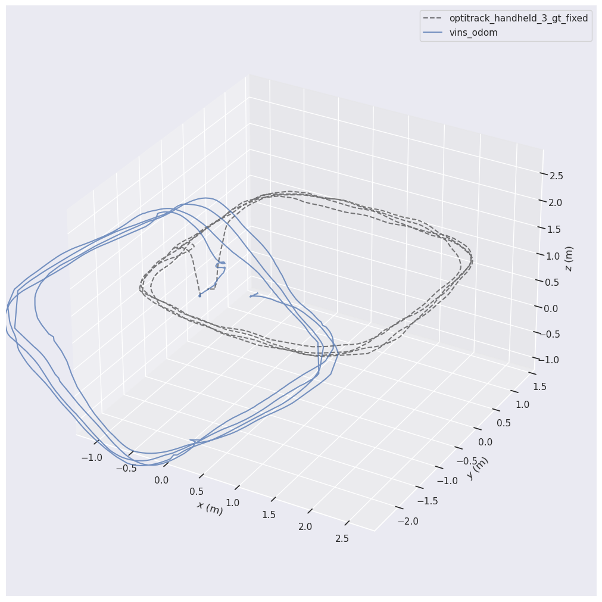
We end up in two trajectories that do not match each other. Any form of comparison here would be invalid. But if we align them, we will see the trajectories presented like this:
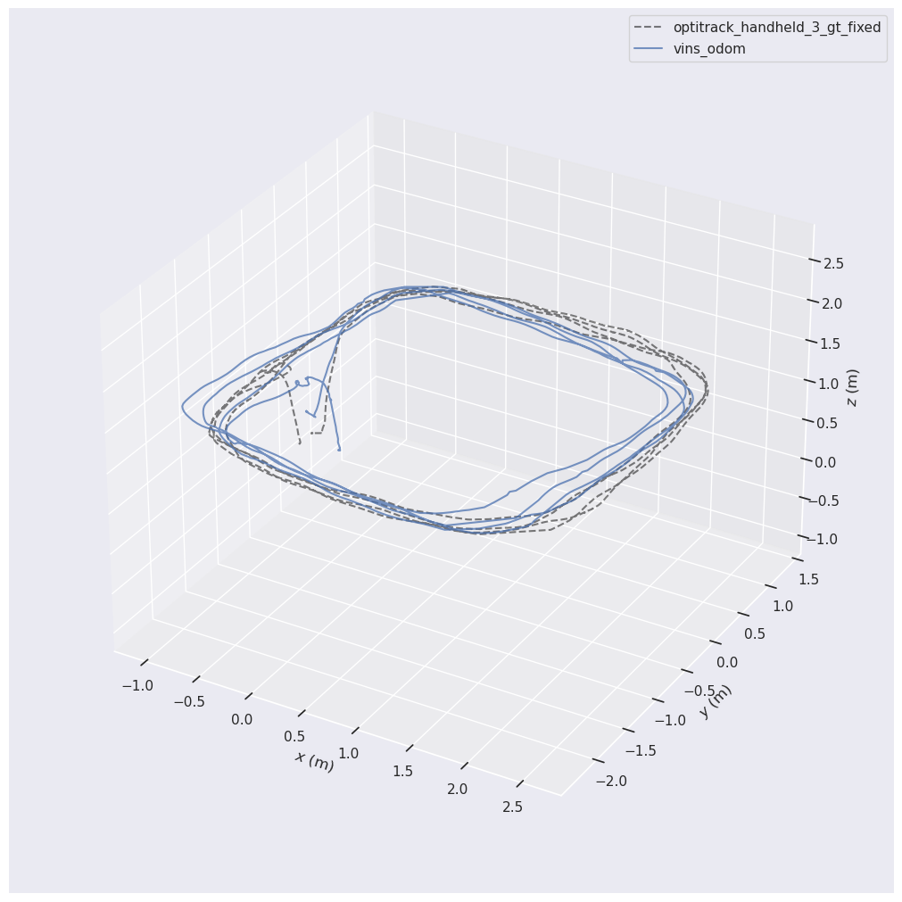
We can see that EVO has nicely aligned the ground-truth trajectory and the estimated trajectory of VINS-Fusion. We can also use the --plot_mode xy to view the same plot in 2D. If the estimated trajectory was substantially distant from the ground-truth, it is a sign of trouble.
By paying attention to the above plot, we notice that EVO has globally adjusted the two trajectories, however, the beginning of the two paths are not exactly the same. In such cases, we can not properly assess the drift of position estimation. We have to make sure that the beginning of the two trajectories is the same point, and from that moment, we can see the gradual drift. To enforce this, instead of using --align we can use --n_to_align <a number> and assign a number of beginning data points to be used for alignment:
evo_traj tum vins_odom.tum --ref optitrack_handheld_3_gt.tum -va --n_to_align 450 --t_max_diff 0.1 -p --plot_mode xyz --save_plot vins_gt_comparison.png
In above example, we set the first 450 data points to be used for aligning the trajectories and it results in the following diagram:
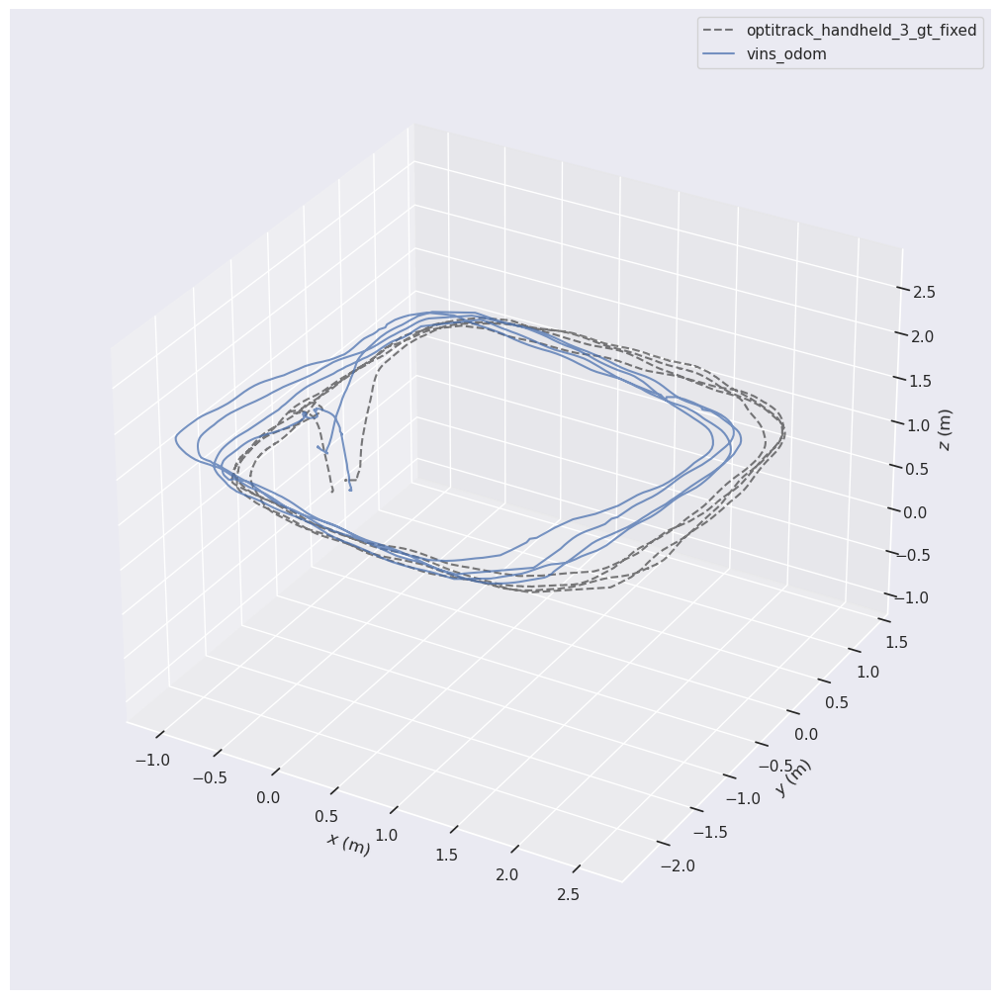
As is evident, the difference at the beginning position is much lower than before, but not there yet. When the starting points align more, you can clearly see that at the continuation of the trajectory, the position estimation is distancing from reality. One reason that we can not accurately align the two starting positions, is the fact that at the beginning of the two trajectories, there is a few seconds of zero motion, which introduces noise to the alignment process. If you start recording your bag file (VINS-Fusion output bag file) when you know there is some motion, it will improve alignment.
The traj_eval tool, also generates comparison plots of each position component (x,y,z) and speed:
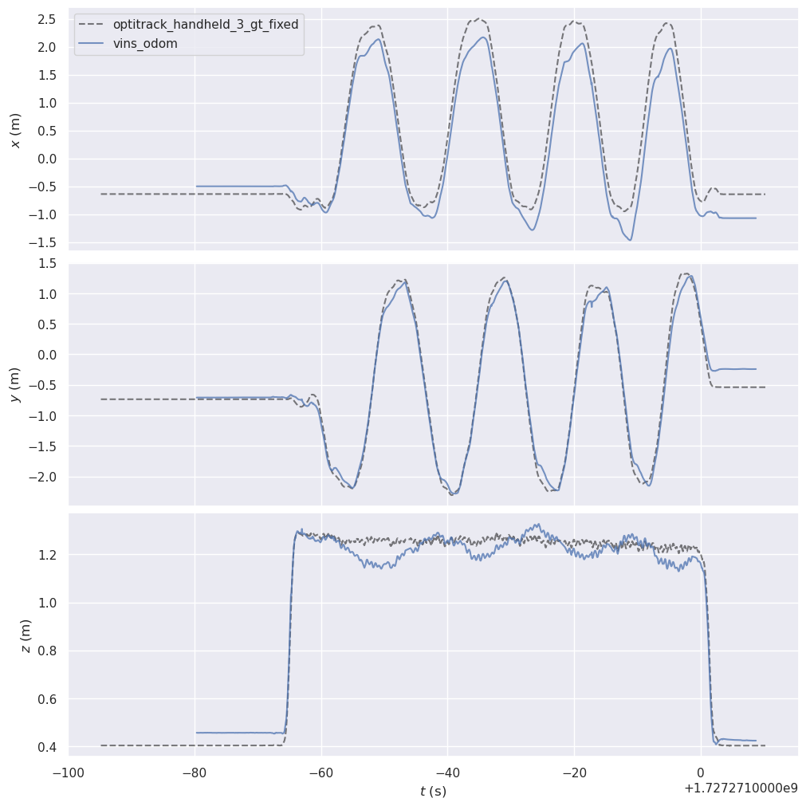
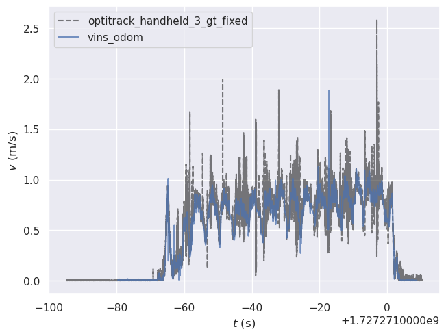
4.4.3 Evaluation Metrics¶
In SLAM and trajectory evaluation, Absolute Pose Error (APE) and Relative Pose Error (RPE) are two standard ways to quantify how far an estimated trajectory deviates from ground-truth. EVO package has tools to measure both of these common error metrics.
As we discussed earlier, EVO first matches poses in time: for each timestamp in the ground-truth trajectory, it finds the closest timestamp in the estimated trajectory. Then it applies a single rigid alignment so that the two trajectories are in the same coordinate frame. The following figure shows on the left side, how the two trajectories are estimated in their own coordinate frames; but, after alignment and time association, each point will have an equivalent point on the other trajectory (connection by yellow lines shows the association).
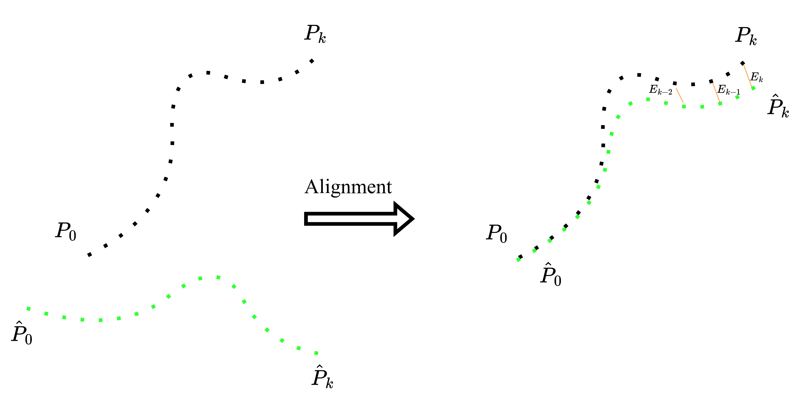
After this alignment step, each ground-truth pose \({P_i}\) has a matched estimated pose \(\hat{P}_i\). The Absolute Pose Error (APE) simply measures how far these two points are from each other. In the figure above, the error is the little yellow segments \({E_i}\) between \({P_i}\) and \(\hat{P}_i\). In formula, for each matched pair we compute
and then summarize all \(N\) errors with the root-mean-square
This tells us, on average, how far the estimated trajectory is from the ground-truth trajectory after alignment.
The Relative Pose Error (RPE) instead compares the motions along the two trajectories. We choose a step \(\Delta\) (for example, one frame or a fixed time gap) and look at how the robot moves from \(P_i\) to \(P_{i+\Delta}\) in ground truth and from \(\hat{P}_i\) to \(\hat{P}_{i+\Delta}\) in the estimate:
and the relative error for that step is
Again we can compute an RMSE over all valid \(i\) to get \(\mathrm{RPE}_{\mathrm{RMSE}}\). This value answers the question: how similar are the small steps of the estimated trajectory to the small steps of the ground-truth trajectory?
Now, let's use EVO for analyzing APE metric. The command is evo_ape and it is mostly similar to the way we used evo_traj, with the only difference that we do not introduce a --ref trajectory and only pass in the two trajectories that are to be compared:
evo_ape tum vins_odom.tum optitrack_handheld_3_gt_fixed.tum -va --n_to_align 450 --t_max_diff 0.1 -p --plot_mode xy --save_plot vins_gt_comparison.png
This command outputs the following metrics, while the rmse of APE is the most important one that we usually look for:
--------------------------------------------------------------------------------
APE w.r.t. translation part (m)
(with SE(3) Umeyama alignment) (aligned poses: 450)
max 0.791623
mean 0.341861
median 0.340357
min 0.038652
rmse 0.382586
sse 190.869596
std 0.171766
--------------------------------------------------------------------------------
In addition, the following trajectory visualization is saved as an image, where the estimated trajectory is compared to the ground-truth. The color map of the points on the estimated trajectory shows the distance of the estimation from correct position. In other words, more red parts suggest more drift.
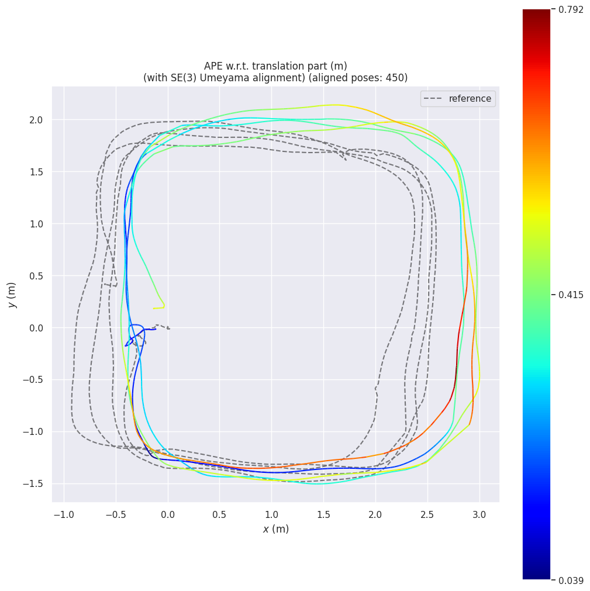
We can repeat this for measuring RPE using the evo_rpe command.
evo_rpe tum vins_odom.tum optitrack_handheld_3_gt_fixed.tum -va --n_to_align 450 --t_max_diff 0.1 -p --plot_mode xy --save_plot vins_gt_comparison.png
This time we get outputs as the following:
--------------------------------------------------------------------------------
RPE w.r.t. translation part (m)
for delta = {self.delta} ({self.delta_unit.value}) using consecutive pairs
(with SE(3) Umeyama alignment) (aligned poses: 450)
max 0.179393
mean 0.012072
median 0.008458
min 0.000012
rmse 0.019814
sse 0.511575
std 0.015712
--------------------------------------------------------------------------------
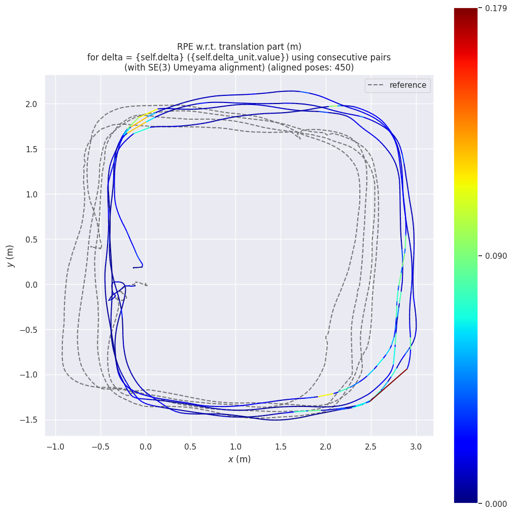
The low value of RPE and relatively high value of APE has an important interpretation. The fact that our VINS-Fusion is mostly correct at capturing relative motions but at certain positions, it drifts suddenly, which ends up increasing the overall drift. These small moments of drift are visible in latest figure, the top-left corners when the robot rotates suddenly, it creates the highest relative error. As such, if we want to improve our robot's localization, we should fix those rotations either by limiting rotation speeds of the robot, or by getting a higher FOV camera.
4.4.3 Mapping Evaluation¶
Two main outputs of SLAM were position and map. We introduced position evaluation tools, but for mapping, similar approaches can be followed to provide numerical measures of how accurate the mapping is. A simple way to quantify this, is to measure distances between two point clouds: our SLAM map versus a ground-truth scan (for example, a high-quality static LiDAR scan of the environment). Tools like CloudCompare or point-cloud libraries such as Open3D and PCL can compute per-point distances and give us simple statistics such as mean, RMSE, or histogram of distances. These methods yield a rough, single number answer to “how far off is my map, on average?”.
On top of that, there are a few intuitive tricks that are great for sanity-checking mapping accuracy in practice:
-
Checking surfaces when revisiting a place: when the robot revisit a corridor or room, new points should land exactly on top of old points. If we see double walls or duplicated surfaces, that’s a clear sign of drift or bad loop closure.
-
Cross-sections: viewing horizontal or vertical slices through the point cloud or occupancy grid. Straight walls should look straight and have a single line, not a fuzzy band.
-
Overlay live scans on the map: When streaming the current LiDAR scan on top of the built map, as the robot moves, obstacles and walls should line up tightly with what’s already in the map.
-
Check known structures: Doors, corners, pillars and flat floors are great landmarks, if they look bent, tilted, or shifted between visits, we know where the map is failing.
These kinds of quick visual checks, together with a simple cloud-to-cloud distance measure, are usually enough to get a first, practical sense of mapping quality. The following visualization is an example of comparing two algorithms (FASTLIO and FASTLIO with loop closure), in terms of map quality. It is a top view cross-section map of the environment (ceilings are removed), and when the robot revisits the initial location, clearly, the map starts to build duplicate surfaces, while on the right side, the new scans after revisiting, exactly land on the previous map, which is a sign of more accuracy.

4.5 Summary¶
In this chapter, you have gone through the full cycle of deploying SLAM in practice. Starting from a calibrated stereo-camera + IMU setup, you saw how to run VINS-Fusion on pre-recorded SMARTNav sequences using our dev-container, inspect its outputs in RViz, and understand what the features, landmarks and trajectories actually mean. You also learned how to prepare your own config files by transferring camera and IMU calibration results (intrinsics, extrinsics, time offsets, and noise parameters) into the format expected by the SLAM algorithm, and how to tune the performance of a SLAM instead of treating it as a black box. On the LiDAR side, you deployed FASTLIO as a real-time LiDAR-IMU odometry block, configured its sensor and map parameters, and observed how a dense 3D map grows as the robot moves. Finally, you saw where pure odometry hits its limits on longer paths and how LeGO-LOAM combines LiDAR odometry with loop closure and pose-graph optimization to correct drift and close loops on larger routes.
To make all of this more than just “nice pictures”, you then focused on evaluation. You saw how to obtain or record ground-truth, log your SLAM outputs to ROS2 bags, and use the EVO package to convert and compare trajectories. With APE you measured how far the estimated path is from ground truth after alignment; with RPE you inspected how good the local motion estimates are, even when global drift exists. You also looked at simple yet powerful ways to judge mapping quality, from cloud-to-cloud distance measures to intuitive checks such as duplicate walls when revisiting a place or misaligned live scans over the existing map. Altogether, this chapter should give you a realistic picture of what it takes to run open-source SLAM on your own data, what knobs you can tune, and how to tell, quantitatively and qualitatively, whether the system is good enough for your robot and application.